Repaso de las fotos de Lanzarote
38 paradas: 27 con la foto de Eric, 8 con la de Commons que se queda y 3 sin foto (fondo de color; nunca la de Wikipedia).
Derechos por revisar antes del lanzamiento: Los Hervideros · Casa-Museo César Manrique (Haría) · Teguise (villa) · Ciudad Estratificada (Rofera de Teseguite) · Casa-Museo del Campesino (Mozaga) · El paseo marítimo de Playa Blanca · Faro de Pechiguera · Ermita de las Nieves · Caleta de Famara y Playa de Famara · La Graciosa.
Montañas del Fuego (Timanfaya) (en el viaje de Eric) 📷 De Eric montanas_del_fuego.jpg 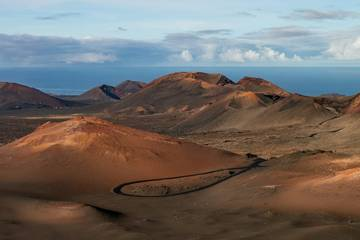
Jameos del Agua (en el viaje de Eric) 📷 De Eric jameos_del_agua.jpg 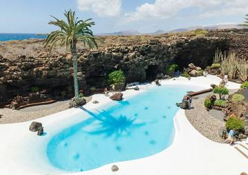
Cueva de los Verdes (en el viaje de Eric) 📷 De Eric cueva_de_los_verdes.jpg 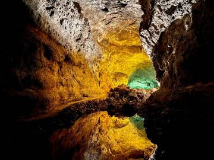
Mirador del Río (en el viaje de Eric) 📷 De Eric mirador_del_rio.jpg 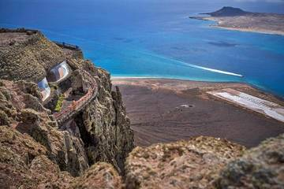
Fundación César Manrique (en el viaje de Eric) 📷 De Eric fundacion_cesar_manrique.jpg 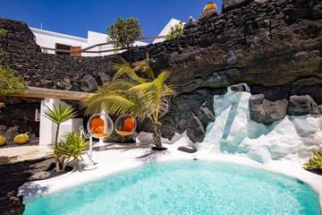
El Golfo y el Charco de los Clicos (en el viaje de Eric) 📷 De Eric el_golfo_y_el_charco_de_los_clicos.jpg 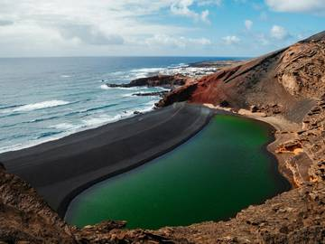
La Geria y sus bodegas (en el viaje de Eric) 📷 De Eric la_geria_y_sus_bodegas_eric.jpg 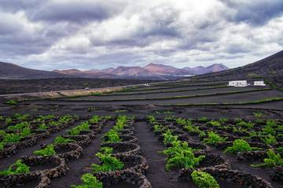
Playas de Papagayo (en el viaje de Eric) 📷 De Eric playas_de_papagayo_eric.jpg 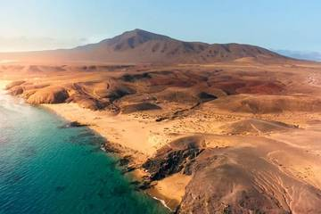
Caletón Blanco 🖼️ De Commons (se queda la de antes) caleton_blanco.jpg 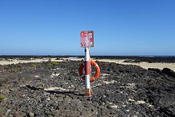
Jardín de Cactus (en el viaje de Eric) 📷 De Eric jardin_de_cactus.jpg 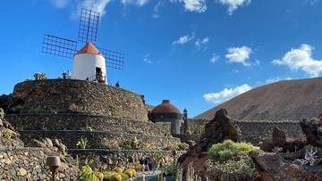
Los Hervideros (en el viaje de Eric) 📷 De Eric · ⚠️ derechos por revisar antes del lanzamiento los_hervideros_eric.jpg 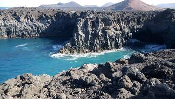
Salinas de Janubio (en el viaje de Eric) 📷 De Eric salinas_de_janubio.jpg 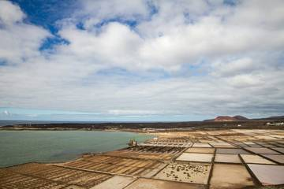
Teguise (villa) (en el viaje de Eric) 📷 De Eric · ⚠️ derechos por revisar antes del lanzamiento teguise.jpg 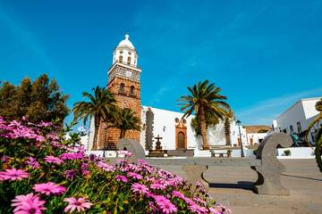
Haría y la Casa-Museo César Manrique 📷 De Eric · ⚠️ derechos por revisar antes del lanzamiento casa_museo_cesar_manrique_haria.jpg 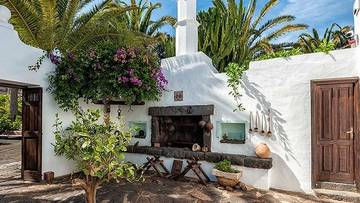
Casa-Museo del Campesino (en el viaje de Eric) 📷 De Eric · ⚠️ derechos por revisar antes del lanzamiento casa_museo_del_campesino.jpg 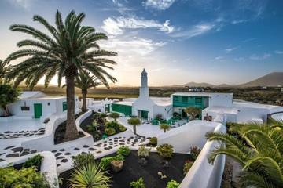
Caleta de Famara y Playa de Famara 📷 De Eric · ⚠️ derechos por revisar antes del lanzamiento caleta_de_famara_y_playa_de_famara.jpg 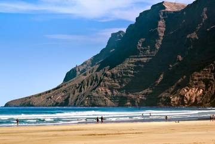
Arrecife: Charco de San Ginés y el paseo (en el viaje de Eric) 📷 De Eric arrecife_charco_de_san_gines.jpg 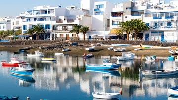
Castillo de San José (MIAC) 🖼️ De Commons (se queda la de antes) castillo_de_san_jose_miac.jpg 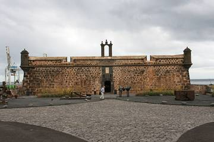
LagOmar (en el viaje de Eric) 🖼️ De Commons (se queda la de antes) lagomar.jpg 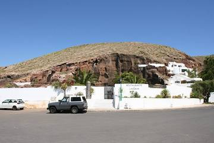
Ermita de las Nieves 📷 De Eric · ⚠️ derechos por revisar antes del lanzamiento ermita_de_las_nieves.jpg 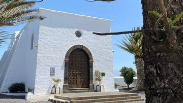
Mirador de Guinate 🖼️ De Commons (se queda la de antes) mirador_de_guinate.jpg 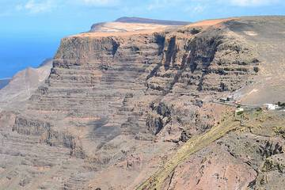
Ciudad Estratificada (Rofera de Teseguite) 📷 De Eric · ⚠️ derechos por revisar antes del lanzamiento ciudad_estratificada.jpg 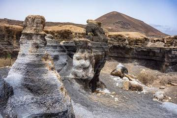
Playa de Montaña Bermeja (en el viaje de Eric) 📷 De Eric playa_de_montana_bermeja.jpg 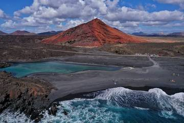
Las Grietas (Montaña Blanca) (en el viaje de Eric) 📷 De Eric las_grietas.jpg 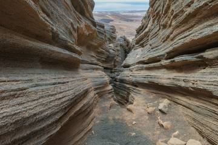
Mirador del Bosquecillo (Risco de Famara) ⚪ Sin foto (fondo de color) sin foto
Mirador de Haría 🖼️ De Commons (se queda la de antes) mirador_de_haria.jpg 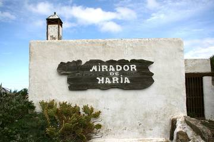
Mirador de los Helechos (en el viaje de Eric) 📷 De Eric mirador_de_los_helechos.jpg 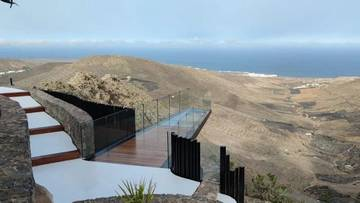
Castillo de Santa Bárbara 📷 De Eric castillo_de_santa_barbara.jpg 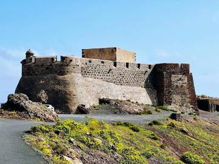
Punta Mujeres y Arrieta (La Garita) 🖼️ De Commons (se queda la de antes) punta_mujeres_y_arrieta.jpg 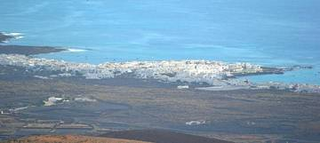
Playa de La Garita ⚪ Sin foto (fondo de color) sin foto
Playa Blanca y el Faro de Pechiguera 🖼️ De Commons (se queda la de antes) playa_blanca_y_faro_de_pechiguera.jpg 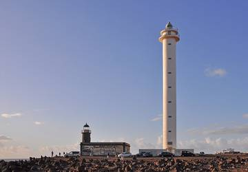
Puerto del Carmen (Puerto Viejo) ⚪ Sin foto (fondo de color) sin foto
Volcán del Cuervo 📷 De Eric volcan_del_cuervo.jpg 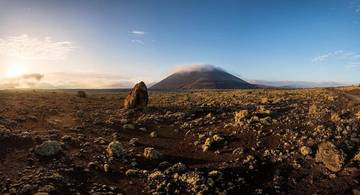
Caldera Blanca 🖼️ De Commons (se queda la de antes) caldera_blanca.jpg 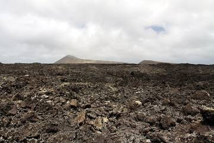
Haría y el Valle de las Mil Palmeras (en el viaje de Eric) 📷 De Eric haria_y_el_valle_de_las_mil_palmeras.jpg 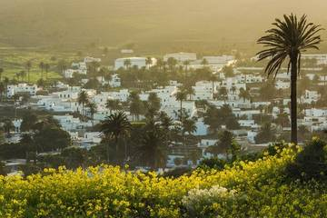
Casa-Museo César Manrique (Haría) (en el viaje de Eric) 📷 De Eric · ⚠️ derechos por revisar antes del lanzamiento casa_museo_cesar_manrique_haria.jpg El paseo marítimo de Playa Blanca (en el viaje de Eric) 📷 De Eric · ⚠️ derechos por revisar antes del lanzamiento paseo_maritimo_de_playa_blanca.jpg 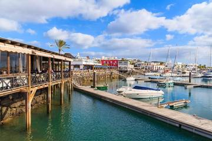
Faro de Pechiguera (en el viaje de Eric) 📷 De Eric · ⚠️ derechos por revisar antes del lanzamiento faro_de_pechiguera.jpg 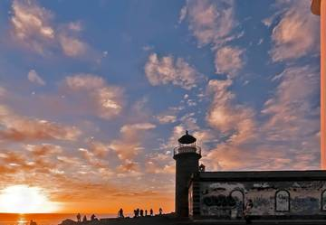
El viaje de Eric: martes 10 y jueves 12 (móvil)
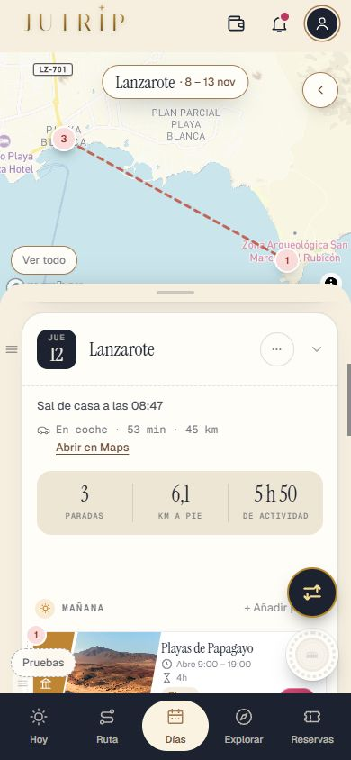
fotos_lz_jueves12_1 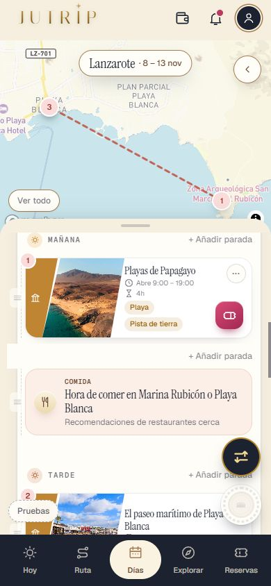
fotos_lz_jueves12_2 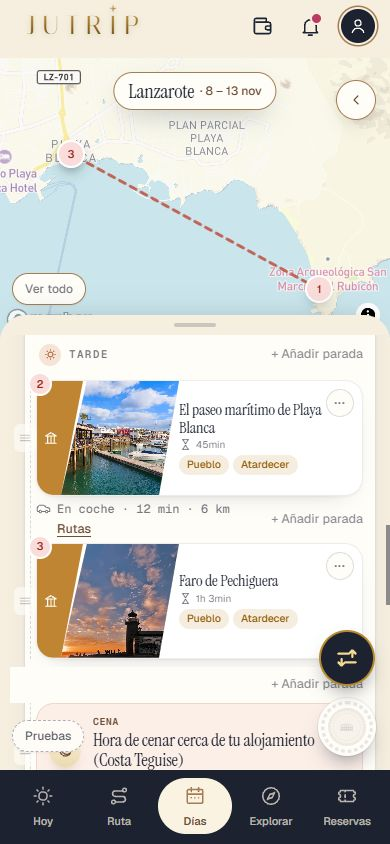
fotos_lz_jueves12_3 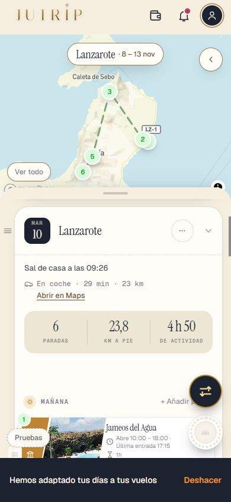
fotos_lz_martes10_1 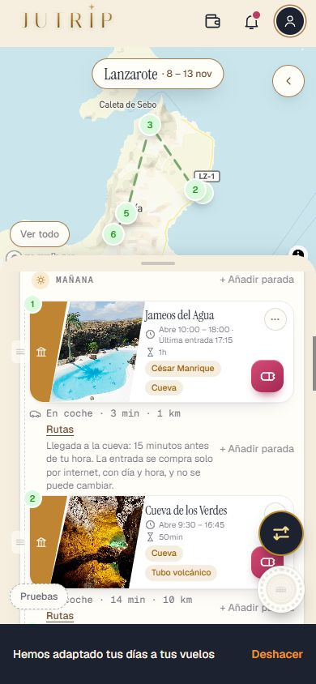
fotos_lz_martes10_2 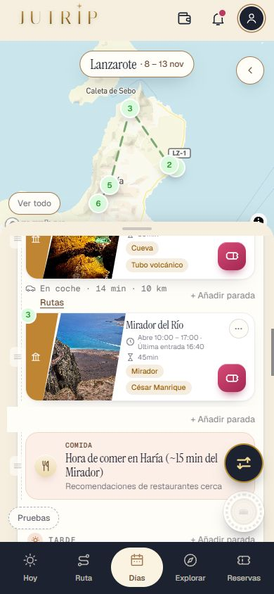
fotos_lz_martes10_3